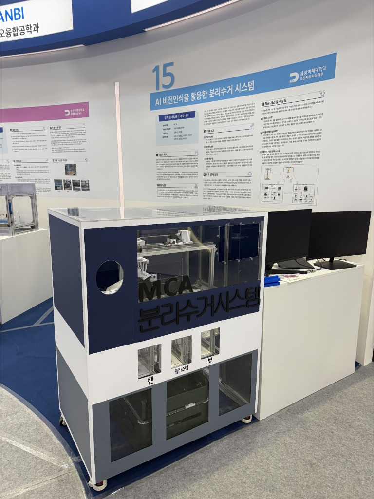
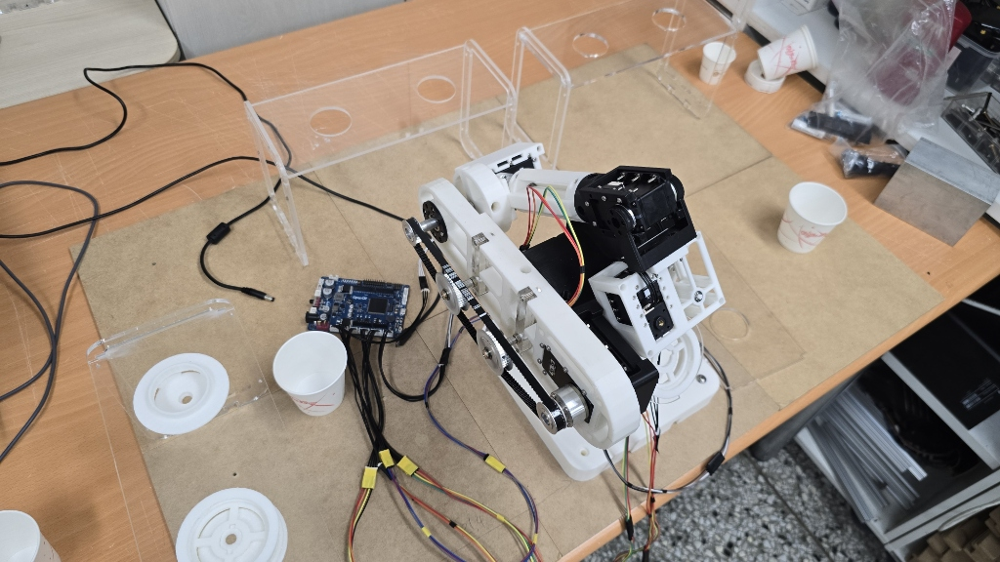

FEATURED PROJECTS
MCA만의 제어 기술 노하우와 완성도가 돋보이는 대표적인 설계 결과물들을 상세히 공개합니다.

2025AI 비전인식을 활용한 분리수거 시스템
반도체 제조 현장의 위험 가스 및 액체 유출을 모니터링하기 위해 구축된 임베디드 시뮬레이터입니다. AI 비전 카메라 출력을 바탕으로 이상 요인을 실시간 추출하고 모니터링 타임로그를 웹 서버에 정밀 기록하는 뛰어난 제어 확장성을 보여주었습니다.

2024무인화 로봇카페 시스템
주문 인터페이스와 로봇 암 제어부 간의 다중 이기종 통신을 접목한 무인 스마트 키친 프로젝트입니다. 정밀 로봇 기구학 연산과 그리퍼 압력 제어 로직을 적용하여 음료 추출, 포장 및 서빙 전 공정 자동화를 안정적으로 증명하였습니다.
다른이미지 업로드 예정
2023
Digi-Star 대상 시스템
로봇자동화공학부의 인공지능 융합 자율 주행 및 동적 경로 탐색 기술을 집대성하여 개발된 하드웨어 시스템입니다. 전국 캡스톤디자인 본선에서 고속 매핑과 장애물 회피 구동 능력을 극찬받아 대상의 영예를 안았습니다.